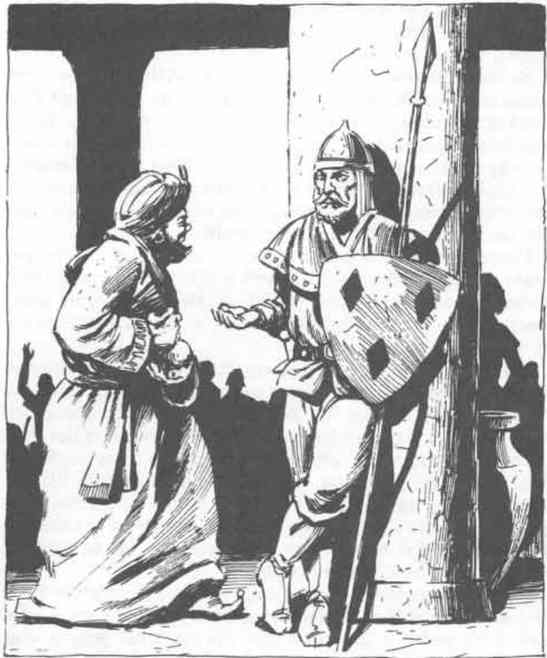

森塔尔·努雷夫 · Sental Nurev
森塔尔·努雷夫 Sental Nurev
灰鹰自由城守卫总队长
 |
|
森塔尔·努雷夫出生在灰鹰附近，父母是陷入贫困的乡绅。很小的时候，他就决定摆脱贫困的唯一方法是依靠自己的武器技艺。一位已经退出冒险生涯的邻居愿意指导森塔尔和他的兄弟；两人成为孤儿后，便前往灰鹰。
森塔尔加入守卫，在担任警察／民兵的同时了解城市生活。他对职责的投入和天生的才能很快为他赢得晋升，绝对的无畏又帮助他迅速提升技艺。还在三十岁出头时，他就成为守卫队长，所有人都知道他是一名可靠、受人尊敬的市民。
他取得这项成就后不久，传来几乎令他崩溃的消息。他深爱的兄弟没有加入守卫，而是选择受雇担任商队护卫。兄弟俩曾努力保持联系，但森塔尔已经很久没有听到弟弟的消息。后来，通过可靠的渠道，森塔尔得知弟弟是土匪王国的俘虏。消息传来后不久，森塔尔又收到消息：弟弟的俘虏者要求他提供关于灰鹰的敏感信息。如果森塔尔拒绝，他们的兄弟就会遭受伤害。
这个两难处境让森塔尔许多个夜晚无法入睡。他不想危害灰鹰，也知道敌人一旦得到被要求提供的信息，就可能严重危害灰鹰。另一方面，他知道弟弟的俘虏者并不是空口威胁，而拒绝服从可能会毁掉弟弟。面对这个问题，他决定拖延。他确实发送了信息，但绝对确保那些信息要么已经过时，要么尽可能无害。
这种做法一直有效，直到弟弟的俘虏者决定把钩子扎得更深。他们告知森塔尔，如果他不更充分地合作，就会向灰鹰当局告发这名受信任的队长是叛徒——而且他们有确凿证据支持自己的指控。森塔尔被迫屈服。作为守卫队长，他有权决定招募哪些守卫，以及给每名守卫分配什么职责。他被迫招募忠于土匪王国的守卫，并调动工作日程，使这些人能够随意刺探情报。一旦发生攻击，他奉命让这些人控制城墙的一段，以方便围攻者夺取那一段。
这些假守卫报告着他的行动，森塔尔再也无法用无用、过时的信息欺骗弟弟的俘虏者。他被迫尽快发送自己能得到的最佳信息。他曾有一次威胁要辞职，几天后却在家中收到一个包裹，里面是弟弟的拇指。他痛苦地意识到，一旦自己的背叛被发现，最轻的后果也会是在灰鹰地牢中被长期监禁。
森塔尔·努雷夫如今看起来憔悴不堪。他身材高大却弯腰驼背，金发日渐稀疏，留着蓬乱的胡子和小胡子。他担心时会咬自己的小胡子；而近来他有太多需要担心的事，所以小胡子已经被咬得很厉害。森塔尔已婚，有三个孩子，年龄分别为 14 岁、11 岁和 9 岁。他的妻子非常担心他；她能看出他肩上的负担，却无法知道那是什么。
除去那些由看不见的主人控制的事务，森塔尔·努雷夫是一名出色的守卫总队长。他几乎不可腐化（他弟弟的绑架者知道这一点，这正是他们绑架弟弟的原因），无所畏惧，而且始终能够完美自控。他偏爱套索或擒人叉一类的非致命武器，这是他担任普通守卫时留下的习惯。他发现，如果罪犯能够自己走进来，就比需要担架员把他们抬进来、然后还要找牧师在审判前治疗他们更容易抓捕。他不是一个无谓杀人的人。在可能的情况下，他会活捉目标并把他关进监狱。这种偏好有时会引发误解：一些非常愚蠢的人以为，既然森塔尔·努雷夫不喜欢杀人，他就不会杀人。他们错了。
森塔尔拥有一把 +3 擒人叉、一把 +1 戟、一根攻击法杖（可作为法杖使用），以及一面前方施有绝望象征、后方带有铰链盖的盾牌；他可以在使用盾牌时操纵这个盖子。这些物品在发生暴动时非常有用。
森塔尔·努雷夫很受欢迎，甚至盗贼和刺客也喜欢他——与某些守卫不同，他不认为违法者只是可以随意杀死的东西。即使是灰鹰最臭名昭著的盗贼或刺客，也会得到与其他人同等的公平对待，否则森塔尔会要求解释。如果森塔尔得知任何守卫向市民敲诈贿赂，相关人员会发现自己陷入巨大的麻烦。
玩家角色可以通过多种方式遇到森塔尔·努雷夫。如果他们希望加入灰鹰守卫，就必须向森塔尔证明自己。他只接受那些能使他确信自身技艺足够、而且忠诚的候选人。
任何获得森塔尔·努雷夫兄弟当前下落信息的玩家角色，都会终身得到一个朋友。森塔尔一直无法得知弟弟在土匪王国中的确切位置。如果玩家角色在灰鹰向森塔尔提供信息，他会直接去找刺客公会会长。图林·死亡猎手欠森塔尔·努雷夫人情，而且个人也喜欢他，因此很愿意试图说服绑架者，认为释放俘虏符合他们自己的利益。
如果玩家角色是违法者，他们可能会在职业层面与森塔尔·努雷夫打交道。他不会接受行贿，但也不会比对待其他人更恶劣地对待试图贿赂他的人。